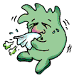

Насморк

Интересные факты:
Обычная простуда (синонимы - острое респираторное вирусное заболевание или ОРВИ, острое респираторное заболевание или ОРЗ) может продолжаться до 2 недель и более.
Изменение оттенка слизи, отделяемой из полости носа, и появление желтоватых или зеленоватых выделений является естественным при вирусной инфекции, поскольку организм борется с вирусом. Данное проявление (симптом) не служит показанием к назначению антибиотиков.
Что делать:
- Пейте достаточное количество жидкости. Полезны также травяные чаи и куриный бульон.
- При высокой температуре (более 38,5°С) или головной боли примите парацетамол или ибупрофен. Детская доза указана в инструкции.
- Пользуйтесь увлажнителем воздуха для снятия заложенности носа.
- Принимайте деконгестатны (противоотёчные средства) внутрь и используйте сосудосуживающие капли местно для уменьшения симптомов заболевания (продолжительность применения - не более 3 дней!). Посоветуйтесь с Вашим врачом по поводу конкретных препаратов.
- При покраснении носа воспользуйтесь салфетками со смягчающим кремом.
Обратитесь к врачу:
- При выраженном повышении температуры (более 40°С).
- При повышении температуры выше 38°С в течение более трёх дней.
- При выраженном затруднении дыхания.
Помните, что насморк - обычное проявление простуды или ОРВИ.
При заражении вирусами, вызывающими простуду, в горле и полости носа происходит образование прозрачной слизи. Слизь помогает вымывать вирусные частицы, в то время как организм борется с инфекцией. Через 2-3 дня клетки иммунной системы (лейкоциты) начинают изменять цвет слизистых выделений на белый или желтоватый. Бактерии, живущие в полости носа, также могут смешиваться со слизью, придавая ей зеленоватый оттенок.
Простуда и насморк почти всегда проходят самостоятельно.
Существует, по крайней мере, 200 вирусов, которые могут вызывать простуду и ОРВИ. Основными проявлениями заболевания являются насморк, чихание, боли в горле при глотании, сухой кашель или чувство першения в горле, головная боль, мышечные боли, повышение температуры. Дети болеют простудой в среднем до 6 раз в год, взрослые обычно реже. Вирусные инфекции могут длиться от нескольких дней до 2 недель. Подобные заболевания нельзя игнорировать, необходимо находится дома и лечиться, а не переносить заболевание «на ногах», ведь инфекционный процесс может распространиться на среднее ухо, бронхи и даже привести к возникновению бактериальных осложнений.
Антибиотики не эффективны при вирусных инфекциях.
Антибиотики не уничтожают вирусы и поэтому не ускоряют выздоровление при простуде, ОРВИ и насморке. Приём антибиотиков без необходимости может причинить вред, способствуя появлению более устойчивых (резистентных) к их действию бактерий. Такие проявления простуды как насморк, поддаются лечению простыми средствами. Обсудите с врачом, какие лекарства или процедуры могут облегчить ваше состояние.
Сезон повышенной заболеваемости простудой, ОРВИ и гриппом - не повод для приёма антибиотиков.
Лучшая профилактика вирусных инфекций - мытьё рук.
Вирусы распространяются при прикосновении рук ко рту, носу или глазам. Частое мытьё рук тёплой водой с мылом поможет предотвратить заражение. Полноценное питание, достаточный по времени сон и физические упражнения помогут сохранить здоровье и предотвратить развитие простуды и ОРВИ. У курящих людей повышается вероятность возникновения простуды, длительного течения заболевания и развития в последующем осложнений, таких как бронхит. У детей курящих родителей повышается вероятность заболевания простудой и развития таких серьёзных заболеваний, как бронхиальная астма.